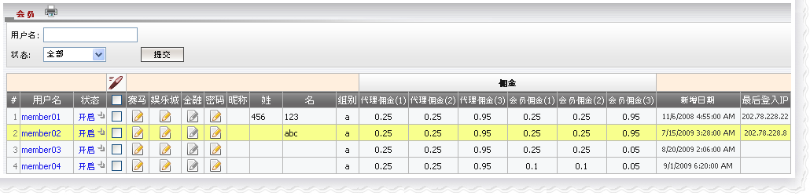
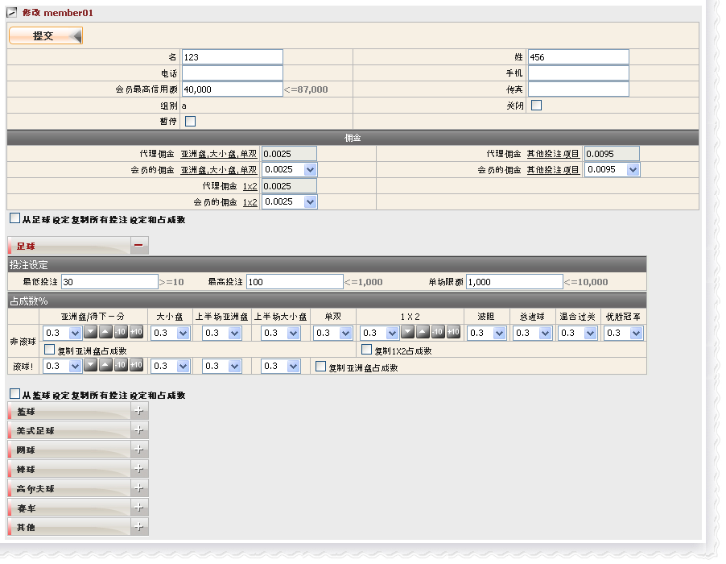
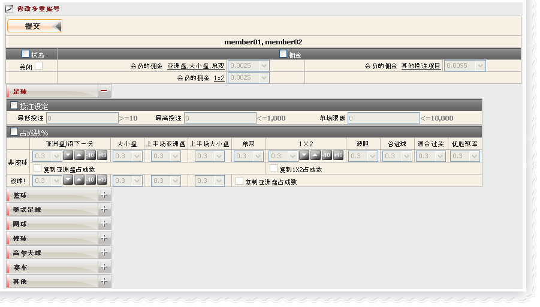
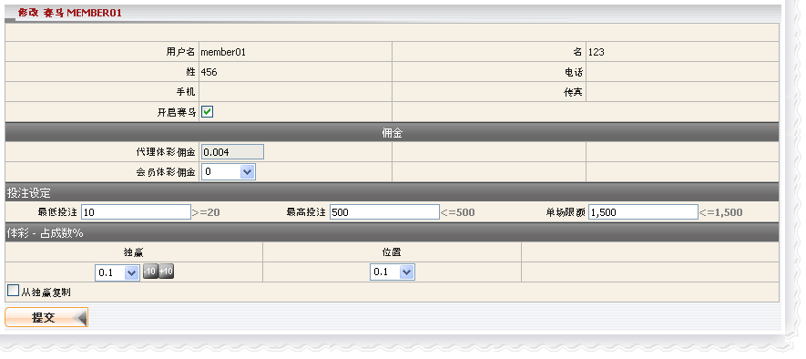
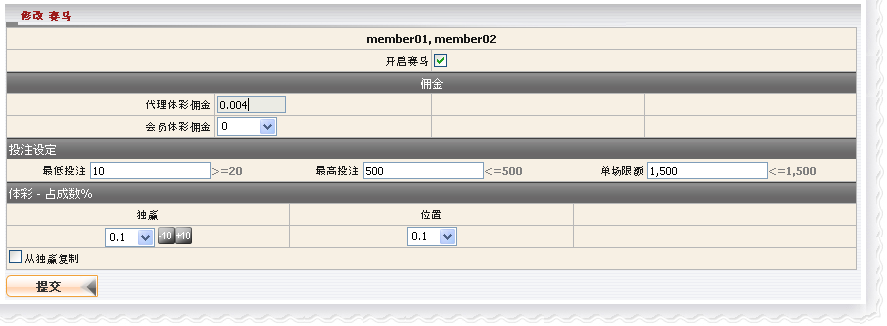
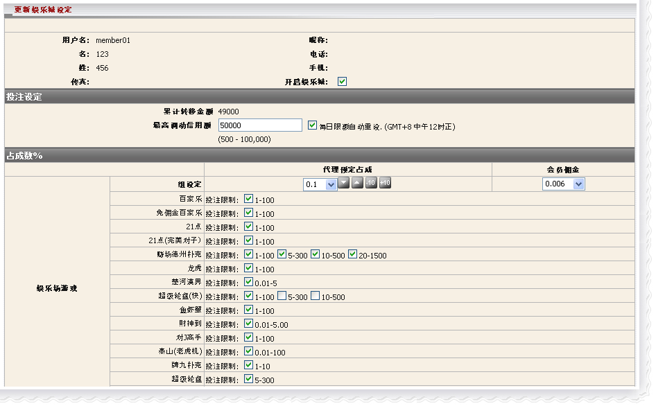
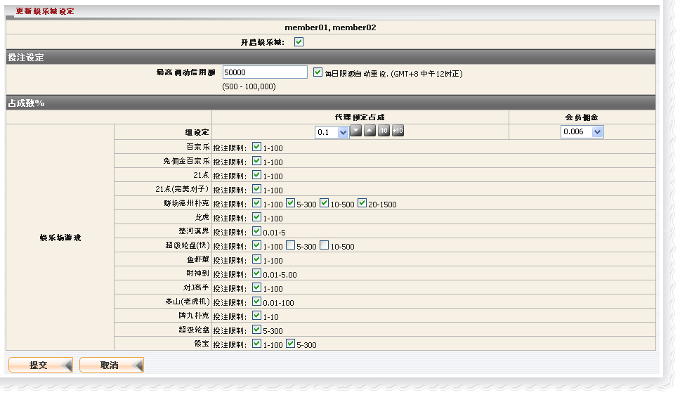
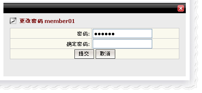
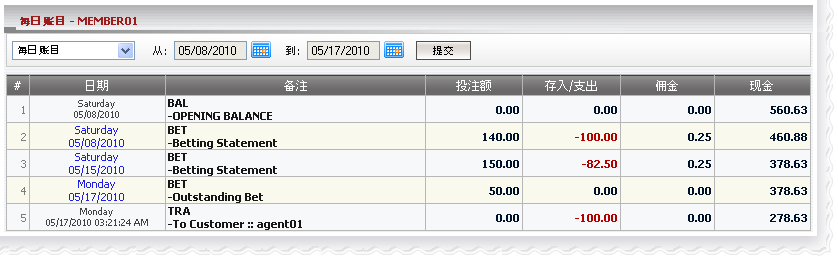

会员
定义:
这是一个属于代理的会员名单; 当然, 代理通过会员名单能够更新他/她的会员或者查看会员的每日账目。

会员
用词注解:
状态: 会员状态 (开启, 关闭或暂停)。
组别: 会员属于哪一个组别, 不同的组别拥有不同的佣金率。
- 代理佣金(1): 代理折扣适用于投注类别: 亚洲盘,大小盘和单双投注。
- 代理佣金(2): 代理折扣适用于所有1x2类型的投注.
- 代理佣金(3): 代理折扣适用于所有种类的其他投注项目
- 会员佣金(1): 会员折扣适用于投注类别: 亚洲盘,大小盘和单双投注。
- 会员佣金(2): 会员折扣适用于所有1x2类型的投注.
- 会员佣金(3): 会员折扣适用于适用于所有种类的其他投注项目.
如何修改会员资料?
- 我们可以修改单一会员或多重会员的以下资料: 状态, 佣金, 投注设定及占成数。
- 在体育博彩投注设定及占成, 我们可以设置个别运动类别的值或只是设置足球/篮球的值再应用到其他运动类别。
编辑体育博彩
修改单一会员资料
- 点击状态栏的 “开启” 键以修改会员信息, 之后将开启编辑页面, 请参考 新增会员
指引以便了解这页面的细节。

编辑单一会员
修改多重会员资料
- 在 "编辑图标" 选取个别会员以修改多重会员资料, 然后将开启多重会员修改页面, 请参考 新增会员 指引以便了解这页面的细节。请记得所有会员都具有相同的设置。若要编辑所有会员, 使用 "选择所有" 功能。

编辑多重会员
编辑赛马
修改单一会员赛马设定
- 在赛马栏目点击 "编辑图标" 以修改会员资料, 会员修改页面将被开启, 请参考 新增会员
指引以便了解这页面的细节。

编辑单一会员
修改多重会员赛马设定
- 选择所有, 点击 "编辑图标" , 然后选择"修改多重赛马占成"执行更新, 请参考 新增会员 指引以便了解这页面的细节。请记得所有会员都具有相同的设置。

编辑多重会员
编辑娱乐城
修改单一会员娱乐城设定
- 在娱乐城栏目点击 "编辑图标" 以修改会员资料, 会员修改页面将被开启, 请参考 新增会员
指引以便了解这页面的细节。

编辑单一会员
修改多重会员娱乐城设定
- 选择所有, 点击 "编辑图标", 然后选择 "修改多重娱乐城占成" 执行更新, 请参考 新增会员 指引以便了解这页面的细节。请记得所有会员都具有相同的设置。

编辑多重会员
如何更改密码?
在 "密码" 栏目点击编辑图标以更改密码。

更改密码
如何查看会员每日账目?
点击会员用户名, 则将开启会员每日账目页面。

每日账目
- 用词注解:
- BAL-OPENING BALANCE: 包括所有转账数额的总余额。
- BET-Betting statement: 已结算注单的输赢数额。
- BET-Outstanding Bet: 仍在进行中/等待中注单的总投注额。
- TRA-To Customer: 已被进行转账的数额。